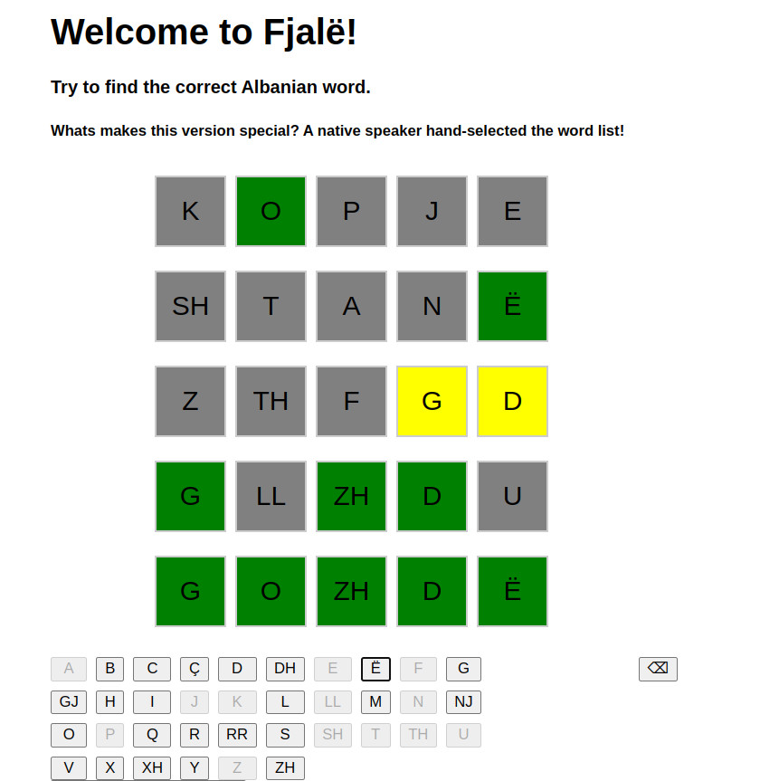

Projects
Here you can find some projects..
Fjale

Simple wordle clone written in angular for the Albanian (Shqip) language. The great thing about this version is the wordlist was handpicked by a native speaker.
Give it a try!
Here you can find some projects..

Simple wordle clone written in angular for the Albanian (Shqip) language. The great thing about this version is the wordlist was handpicked by a native speaker.
Give it a try!